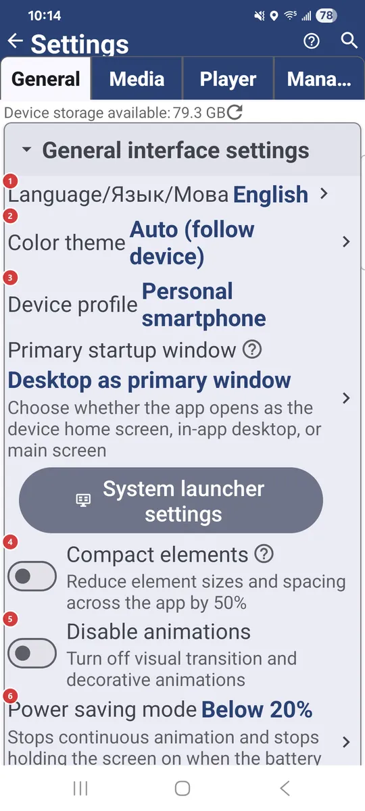
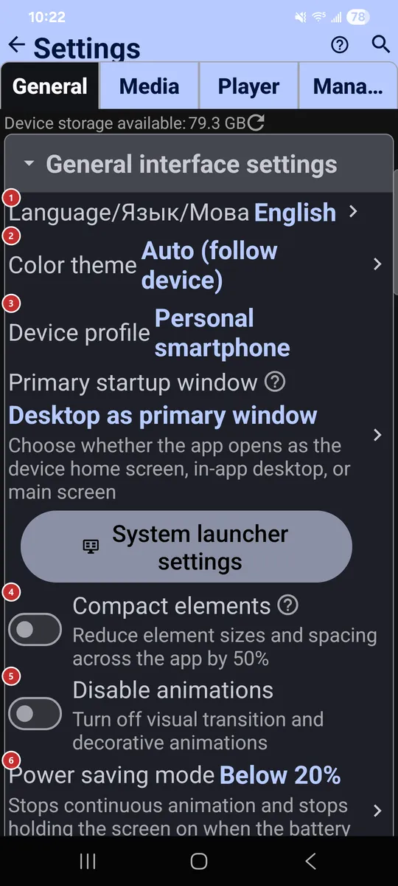

Settings: General
What this is for
General holds the settings that apply to the whole app: language and theme, the file browser, network sources, backups and caches. Come here when something should look, behave or connect differently everywhere.


In this order
There is no fixed order here - every option works on its own. They are grouped below by the same section headers you see on the tab.
The elements
General interface settings
1Language/Язык/МоваSets the language of the whole app.
Pick a language from the list and the screens switch to it. You can also choose it on the first page of the welcome wizard.
2Color themeChooses a light, dark or colored theme.
Auto follows your device. The other options are Light, Dark, and green, blue or red variants of both.
3Device profileApplies a ready-made set of defaults for the kind of device you use.
Profiles cover a personal smartphone, tablet, TV box, car head unit, photo frame, e-book reader and more. One pick tunes many settings at once, so the app suits the device without manual work. Choose Other to keep your settings as they are.
- Undo
- Before a profile overwrites your settings, the app tells you how many it will change. Cancel keeps everything as it is.
4Compact elementsMakes everything smaller, so more fits on screen.
Lists, buttons and text shrink by half. Touch targets get smaller too, so try it on a large screen first.
5Disable animationsTurns off transitions and decorative animations.
Handy if animations distract you or the device feels sluggish.
6Power saving modeCalms the app down when the battery runs low.
It stops continuous animation and stops holding the screen on. Choose when it starts: never, always, or below a battery level you pick.
7Enable FavoritesTurns the Favorites feature on or off.
With it on, you can mark files as favorites, see them in one list and put them on a home screen widget. The Favorites button in the resource list appears along with it.
8Allow new windowsAdds an action that opens a folder or file in a new window.
The action shows up in the file browser and the player. It is useful on tablets, foldables, Chromebooks and large displays with several windows. When it is off, everything opens in the current window.
Resource list interface
9Resource grid cell sizeSets how big resource tiles are in grid view.
It applies to the resource list. Smaller cells fit more resources, larger ones are easier to read. Grid view itself is switched on with the view button in the resource list.
10Programs panelShows the programs menu as a bar above the resource list.
The bar mirrors the programs from the menu, so they are one tap away. While the panel is on, the three-dots button is hidden.
File browser interface
11Allow All Files modeAllows the All Files mode for resources.
In that mode a resource shows and manages every file type, not just media: documents, archives and other files too. This switch only permits it, so you still turn it on for each resource.
13Show subfolders separatelyLists subfolders as items you can tap.
Subfolders appear in the file list next to files. Tap one to go inside.
14Swipe left actionChooses what swiping a file row to the left does.
Pick an action such as open in player, send to, info, favorite, copy, move, rename, extract archive or delete, or no action at all. Actions that change files work only in folders you can write to.
15Swipe right actionChooses what swiping a file row to the right does.
Pick an action such as open in player, send to, info, favorite, copy, move, rename, extract archive or delete, or no action at all. Actions that change files work only in folders you can write to.
Remote resources (SMB/(S)FTP/Cloud)
16Local network (Ethernet) SMBTurns on connecting to shared folders on your local network.
Use it for a home NAS, a Windows PC with file sharing on, or a router with a USB drive. With it on, you can add SMB resources, and the SMB tab appears in the resource list.
17Computer on the internet (S)FTPTurns on connecting to servers over FTP and SFTP.
Use it for a home server, a NAS, web hosting or a router that supports (S)FTP. With it on, you can add such resources, and the S/FTP tab appears in the resource list.
18In cloud resourcesTurns on cloud storage: Google Drive, OneDrive and Dropbox.
Connect an account and your cloud folders open right inside the app. With it on, the Cloud tab appears in the resource list.
Share from phone
19SFTP serverLets other devices open folders from this one over SFTP.
Add at least one shared folder, choose password or SSH key sign-in and a port from 1024 to 65535, then turn the server on. Another device connects with the address shown here, or by scanning the pairing code in FastMediaSorter. After you change its settings, turn the server off and on again to apply them.
Access from anywhere
20Share access through Google DriveLets your other devices on the same Google account connect to this phone's share.
Puts the server's address, login and password in the app folder of your Google Drive. With it off, those devices still see the share but cannot connect to it.
21Exchange serverMakes this phone's share reachable from any network through your exchange server.
Pick the outgoing exchange server with Change, then switch it on; the status line shows the address the share is reachable at. New access link issues a fresh link to the share.
Authorization and accounts
22Saved authorizationsReviews the sign-ins the app saved from its web sign-in screen.
The in-app web sign-in keeps cookies and logins so the app can download files from sites that need you signed in. Open this screen to remove the ones you no longer need.
23Secure sensitive screensHides sensitive screens from screenshots and the Recents preview.
It covers screens that show passwords. They cannot be captured in a screenshot and do not appear in the Recents preview.
Backups, restore and settings export
24Export All Settings to FileSaves all settings to a file.
The file is FastMediaSorter_export.xml in the Downloads folder. Keep it to move your setup to another device or to return to it later.
25Import Settings from FileLoads settings from the export file.
It reads FastMediaSorter_export.xml from the Downloads folder, so put the file there first - for example one exported on another device.
- Undo
- Export your current settings first if you may want to go back to them.
26Backup settings to Google DriveSaves your settings to your Google Drive.
A backup holds all settings, the resource list, network passwords and saved site sign-ins, so keep the backup file private. Cloud sign-ins for Google Drive, OneDrive and Dropbox are not included. Once a backup exists, its date and account are shown below.
27Restore settings from Google DriveBrings settings back from your Google Drive backup.
Use it on a new device or after a reset. Cloud sign-ins are not part of a backup, so sign in to Google Drive, OneDrive or Dropbox again afterwards.
28SET default settingsReturns all settings to their defaults.
Your resources and destinations stay in place. The app asks you to confirm before it resets anything.
- Undo
- Export your settings first if you may want them back.
Background sync, network and cache
29Network ParallelismSets how many network operations run at once.
Values run from 1 to 24 and the default is 4. More at once can be faster on a fast network; fewer is gentler on a slow connection or a small server.
30Video pre-cache sizeSets how much of a streamed video is buffered ahead.
Less (0.5x) saves disk space and bandwidth, but playback may stutter on a slow network. Auto lets the player decide. More (2x) plays smoother on an unstable network and uses more disk space.
31Enable background syncChecks network resources for file changes in the background.
Choose how often it checks, or run a check right away with the Sync Now button. A line below shows when the last sync happened.
32Preload thumbnailsPrepares thumbnails for network videos and PDFs after each sync.
Thumbnails are made in the background, so they are ready when you open the folder. A separate option limits this to unmetered networks such as Wi-Fi.
33Cache Size LimitSets how much disk space the image cache may use.
The cache keeps thumbnails and previews so they load fast next time. Enter a size in megabytes, or press Auto and the app picks one from the storage your device has. The default is 2 GB.
34Clear CacheClears the app cache to free space.
It removes thumbnails, previews and temporary files downloaded from the network. The current cache size is shown next to the button, and the app asks you to confirm first. The cache fills up again as you browse.
- Undo
- Cached items are only copies, so nothing of yours is lost; the first view of a folder may just be slower.
35Statistics collectionCollects usage statistics on your device.
The data stays on the device and nothing is sent automatically. While collection is on, a Statistics row appears that opens what was gathered.
Reset General section
36Reset General sectionReturns only this tab to its defaults.
Settings on the other tabs keep their values. The app asks you to confirm first.
All about this application
37Downloadable ExtensionsManages optional parts of the app that you download.
Extensions, such as text recognition, translation or extra decoders, are downloaded only when you want them and can be deleted again to free space.
38Permissions & AccessShows what the app may access and lets you grant it.
Each permission has a short note on what it is for. Grant what you need, and open system settings for the ones Android does not let the app request on its own.
39About systemOpens a screen with information about your device and the app.
It shows technical details about this device and the app.
40User GuideOpens the online user guide in your browser.
The guide opens in Russian, Ukrainian or English, depending on the app language.
41Welcome TutorialOpens the welcome wizard again.
Go through the first-run pages once more: language, theme, device profile, network sources, capabilities and permissions.